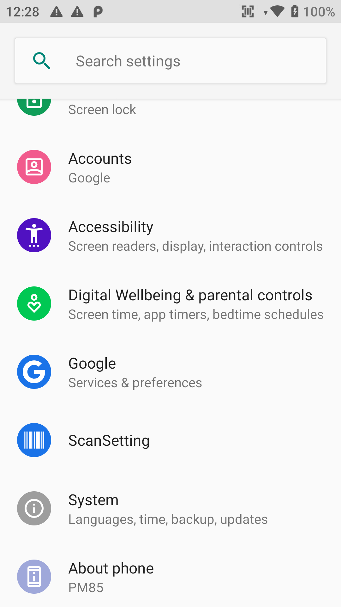
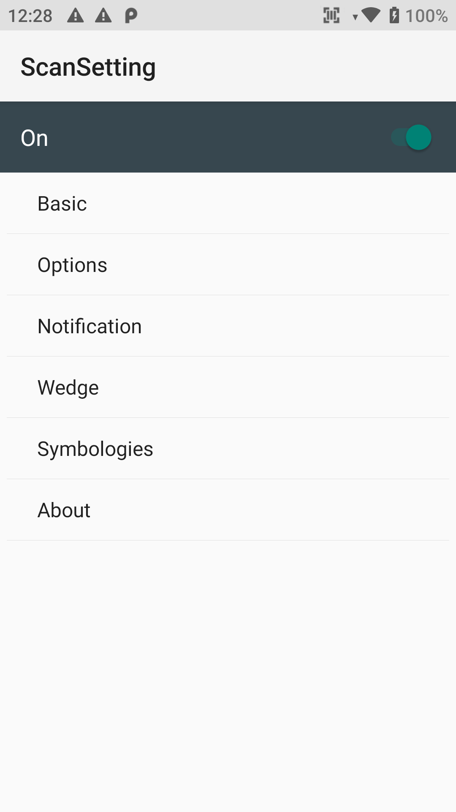

Point Mobile Integration Tutorial
Open Settings select ScanSettings
Inside Settings > ScanSettings turn it on and select Basic
Inside Settings > ScanSettings > Basic
Change Wedge mode
Result type to Intent Broadcast
Change Custom intent
Intent action : com.edgewise.handheld.ACTION
Intent category : com.edgewise.handheld.CATEGORY
Extra decode String value : com.symbol.datawedge.data_string